Cómo usar el programa de Windows y la app del móvil: importar tus extractos, entender cada pantalla y cada cifra, y mantener tus datos a salvo.
Versión 0.6.1 del programaNoviembre de 2026dasuarezang.github.io/kreix-web
Contenido
Índice
1Qué es Kreix y cómo se usa3
2Instalar y primer arranque4
3Importar tus extractos6
4Recorrido por el programa9
5Tus movimientos, presupuestos y metas14
6Entender las cifras16
7Seguridad y copias17
8Llevar tus datos de un sitio a otro19
9Kreix en el móvil20
10Atajos y pequeños trucos24
11Problemas habituales25
12Glosario26
Cómo leer esta guía. Si es tu primera vez, lee los capítulos 1 a 3 y vuelve cuando quieras al resto. Todas las capturas usan datos de demostración inventados: ninguna cifra es real.
1
Qué es Kreix y cómo se usa
Kreix es un programa de finanzas personales. Lee los extractos que tú descargas de tu banco y te enseña, en un solo sitio, cuánto tienes, cuánto gastas, cuánto ahorras y cómo va tu inversión. Existe en dos formas que comparten la misma lógica y el mismo formato de datos:
Programa de Windows
El programa principal, para Windows 10 y 11. Es donde se importan los extractos, se organiza todo y se hacen las copias de seguridad.
App del móvil
La misma app adaptada al móvil (Android y iPhone). Se instala desde el navegador, sin tienda de apps, y funciona sin conexión. Los datos se le pasan desde el ordenador con un código QR.
Cuatro ideas que conviene tener claras
Kreix no se conecta a tu banco. Nunca te pide claves ni accesos. Trabaja con archivos CSV o Excel que descargas tú desde la web o la app de tu banco.
Todo se queda en tu equipo. No hay cuentas, servidores ni telemetría. Los datos se guardan cifrados con una contraseña maestra que solo tú conoces.
Puedes reimportar sin miedo. Si importas dos veces el mismo extracto, o dos que se solapan, solo se añade lo nuevo.
Casi todo se deshace. Tras cada cambio importante aparece un aviso con un botón Deshacer.
Qué necesitas para empezar
Un equipo con Windows 10 u 11 (64 bits), para el programa. El móvil es opcional.
Los extractos de tu banco en CSV o Excel (no se importan PDF). Los bancos reconocidos de serie están en el capítulo 3; para cualquier otro, Kreix te ayuda a indicar qué columna es cada cosa.
Unos minutos para elegir una contraseña maestra que no olvides: si la pierdes, nadie puede recuperar los datos.
Kreix
2
Instalar y primer arranque
Instalar el programa
Descarga el instalador (Kreix-Setup-0.6.1.exe) desde la web y ábrelo.
El instalador no pide permisos de administrador: instala Kreix en tu carpeta de usuario y crea un acceso directo en el menú Inicio y, si quieres, en el escritorio. Puedes elegir el idioma del instalador (castellano, català o English).
Como el instalador aún no está firmado, Windows puede avisarte la primera vez. Pulsa Más información y después Ejecutar de todas formas.
Al desinstalar no se borran tus datos: siguen en %APPDATA%\Kreix hasta que tú los elimines.
La contraseña maestra
La primera vez que abres Kreix te pide crear una contraseña maestra (mínimo 8 caracteres). Debajo, un medidor de cuatro franjas, que se llenan y pasan de rojo a amarillo y a verde, y una frase te dicen lo difícil que sería adivinarla y cómo mejorarla. Es un aviso, no una regla: el único mínimo son 8 caracteres.
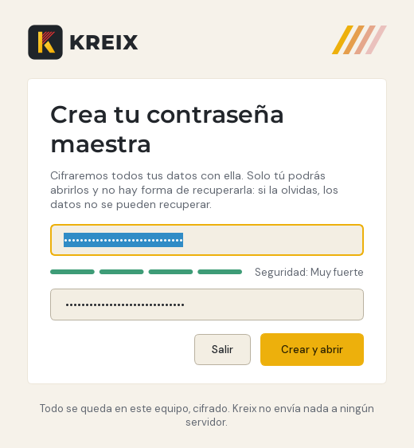
Crear la contraseña maestra, con el medidor de fortaleza.
Apúntala en un sitio seguro. Kreix cifra tus datos con ella y no existe ninguna llave de repuesto. Si la olvidas, la única salida es empezar de cero.
La bienvenida
Después, un cuadro te hace tres preguntas rápidas. Todo se puede cambiar luego en Ajustes:
Idioma. Castellano, català o English. Se propone el del sistema.
Tu nombre. Para que Inicio te salude según la hora. Es opcional.
Qué quieres gestionar. Tus cuentas bancarias, tus inversiones o ambas cosas (siempre queda al menos una). Inicio se adapta a lo que elijas.
La primera pantalla
Con Kreix todavía vacío, Inicio explica en tres pasos qué descargar y dónde soltarlo, y ofrece Probar con datos de ejemplo: datos inventados, con un aviso arriba y un botón Empezar con mis datos. Se quitan solos en cuanto importas extractos reales, así que nunca se mezclan con los tuyos.
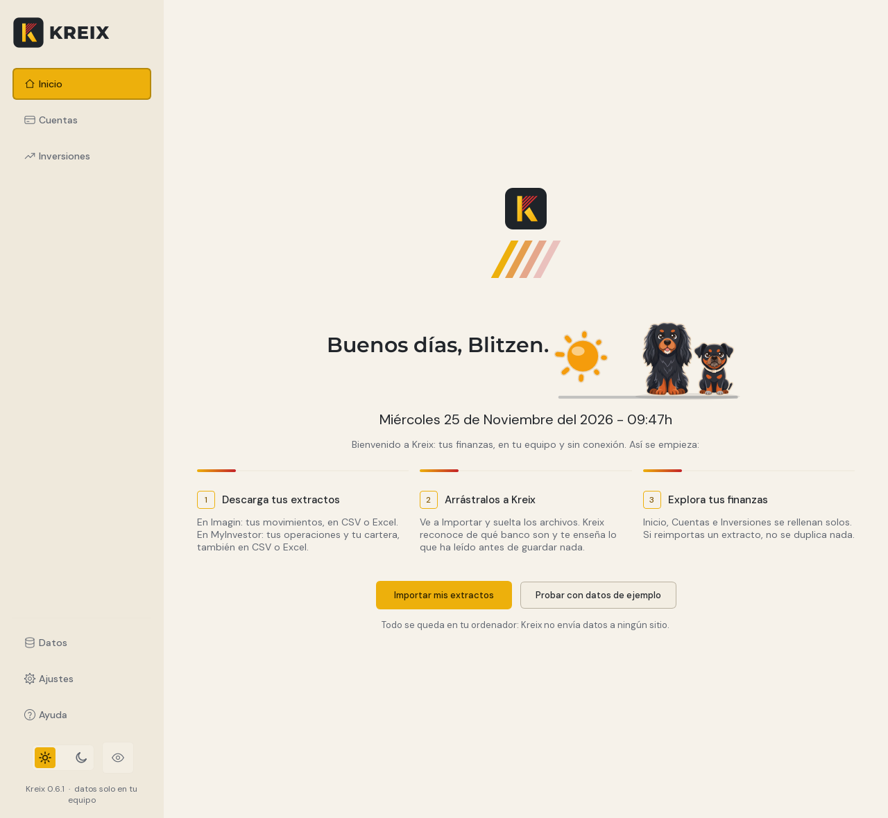
Inicio con Kreix vacío: tres pasos para empezar.
3
Importar tus extractos
Todo empieza en Datos > Importar. Descarga el extracto de tu banco en CSV o Excel, arrástralo a la ventana (o pulsa Seleccionar archivos) y elige la cuenta a la que pertenece.
Suelta el archivo. Kreix detecta el banco y el tipo de archivo por las cabeceras, no por el nombre ni la extensión. Funcionan archivos sin extensión o con .csv.txt.
Revisa lo que ha leído. Aparece una tarjeta por archivo con su tipo, el número de filas, las fechas, cuántos movimientos son nuevos y cuántos ya estaban. Todavía no se ha guardado nada.
Pulsa Importar. Se guardan solo los movimientos nuevos y un aviso te deja Deshacer si algo no es lo que esperabas.
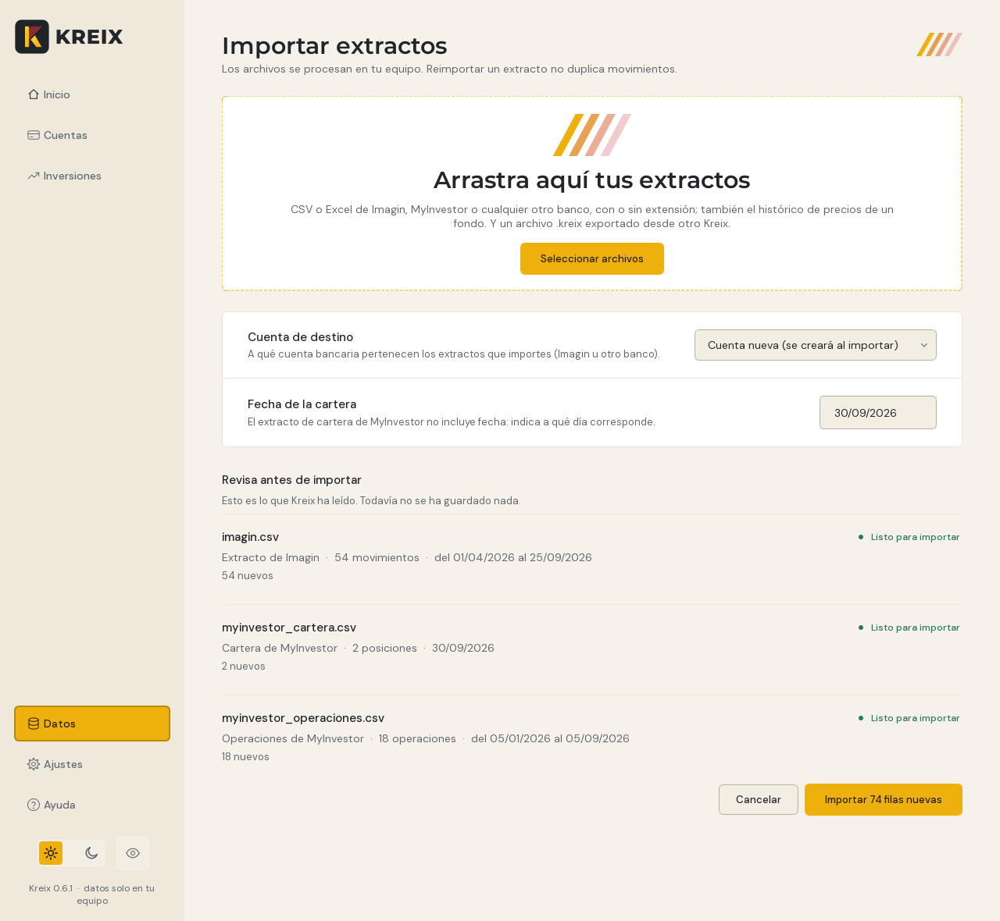
Vista previa de la importación: lo que Kreix ha leído, antes de guardar nada.
Qué archivos reconoce
Origen
Archivo
Observaciones
Imagin
Extracto de movimientos
CSV o Excel
MyInvestor
Operaciones y cartera
El extracto de cartera no lleva fecha: Kreix te pregunta a qué día corresponde.
CaixaBank
Extracto de movimientos
Ingresos y gastos en columnas distintas. En pruebas.
Santander
Extracto de movimientos
En pruebas.
Revolut
Extracto de la cuenta (CSV)
En inglés o en español. Resta la comisión y solo lee los movimientos en euros. En pruebas.
Trade Republic
Transacciones (CSV)
Lee la cuenta de efectivo; deja fuera las compras y ventas de bolsa. En pruebas.
Cualquier otro banco
Extracto de movimientos
Un asistente te pregunta qué columna es cada cosa.
Histórico de precios
CSV o Excel de un fondo
Una columna de fecha y otra de precio, y opcionalmente el ISIN.
Admite CSV con punto y coma, coma o tabulador, en UTF-8 o Windows-1252, y Excel (.xlsx y el antiguo .xls, incluso el que algunos bancos guardan como tabla web). Los importes en formato español (-2,99EUR, 1.234,56 €) se limpian solos. Un archivo .kreix se restaura directamente (capítulo 8).
Si tu banco no está en la lista
Al soltar un archivo que Kreix no reconoce aparece el botón Asignar las columnas. Un asistente te enseña las primeras filas, propone las columnas por sus títulos y tú las corriges:
La fila de los títulos (se salta las líneas de presentación que traen algunos Excel).
El importe: una columna con signo, o dos de ingresos y gastos; y si los gastos vienen como números positivos.
Los decimales (1.234,56 o 1,234.56) y el orden de la fecha (día/mes/año o mes/día/año).
El saldo, que es opcional; si lo das, Kreix comprueba que encadena.
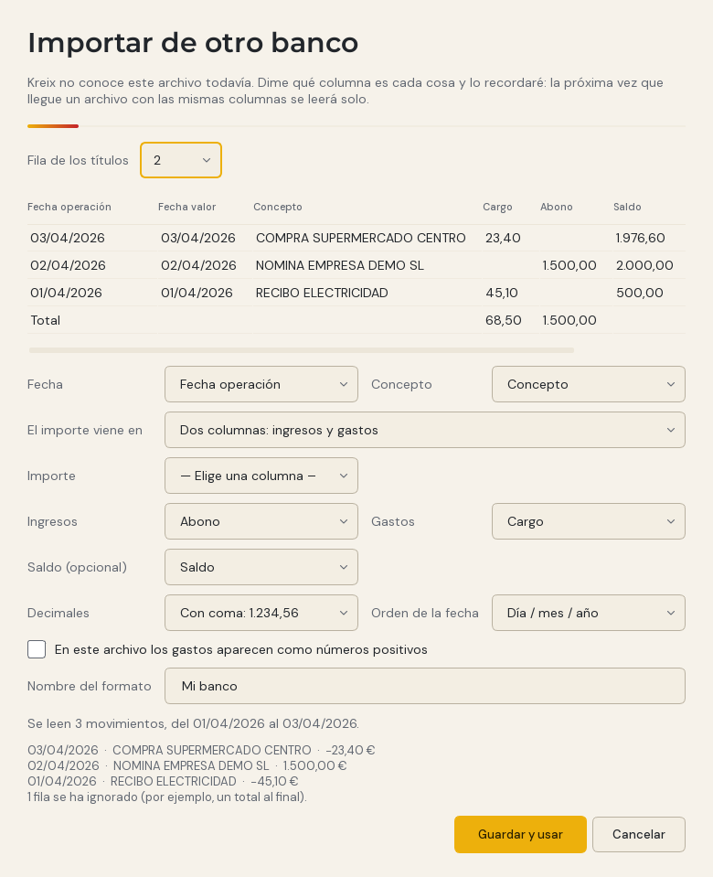
El asistente para importar de otro banco.
Antes de guardar ves cuántos movimientos se leen y los primeros, para comprobar fechas, importes y signos. El formato queda guardado con el nombre que le pongas y se aplica solo a los archivos siguientes; en Importar > Bancos que ya conozco se puede olvidar.
Duplicados y varias cuentas
Kreix nunca duplica movimientos. Puedes reimportar el mismo extracto, o varios que se solapan. Dos pagos idénticos el mismo día se distinguen por el saldo posterior.
En Importar eliges la cuenta de destino de cada extracto. El mismo extracto importado en dos cuentas distintas no cuenta como duplicado. La cartera de inversión es una sola.
Si un archivo no se puede leer, Kreix explica el motivo y qué hacer (por ejemplo, descargarlo otra vez en CSV o Excel sin editarlo).
Histórico de precios de un fondo
Si has descargado el histórico de precios de un fondo (de tu banco, Morningstar, Yahoo o Investing), suéltalo también en Importar. Kreix toma el ISIN de una columna, del nombre del archivo o del selector Fondo del histórico. Con él, la gráfica de cada fondo pasa de un punto al mes a puntos de días reales. El valor de hoy no cambia: sigue mandando tu último extracto de cartera.
4
Recorrido por el programa
Arriba a la izquierda están las tres vistas de tus datos: Inicio, Cuentas e Inversiones. Abajo, con su icono, las herramientas: Datos (con Importar y Exportar), Ajustes y Ayuda, y debajo el conmutador de modo claro y oscuro y el ojo del modo privacidad.
Inicio
Tu situación de un vistazo. Te saluda según la hora con tu nombre, el día y la hora, y la fecha de la última actualización de datos (el último día en que importaste algo).
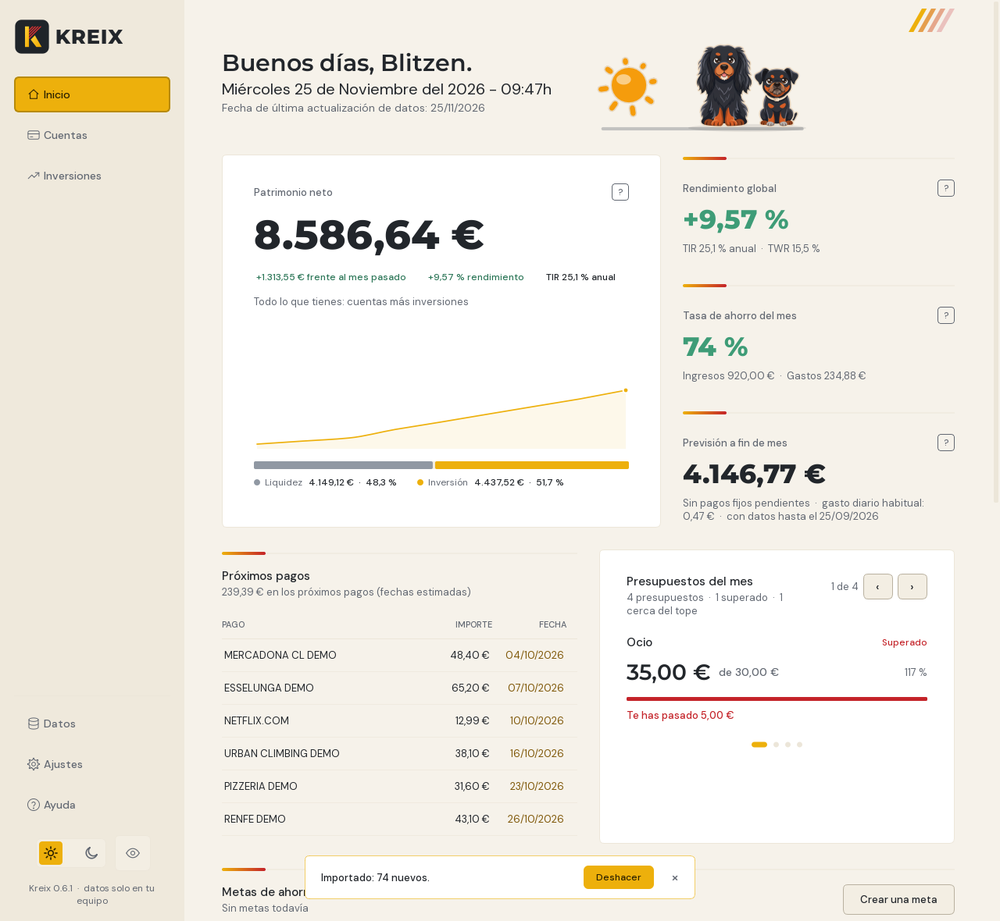
Inicio: patrimonio neto, rendimiento, tasa de ahorro, previsión, próximos pagos y presupuestos.
Patrimonio neto: todo lo que tienes, cuentas más inversiones, con cuánto es liquidez y cuánto inversión. Una línea en verde o rojo dice cuánto ha subido o bajado frente al cierre del mes anterior.
Rendimiento global y tasa de ahorro del mes.
Previsión a fin de mes: cuánto dinero tendrás el último día del mes con tus pagos fijos que quedan, tus ingresos fijos que aún faltan (la nómina) y tu gasto de cada día. Es una estimación y la Ayuda explica cómo se hace.
Próximos pagos: tus pagos recurrentes que tocan en las próximas semanas, por fecha.
Presupuestos del mes: pasan solos de uno en uno; puedes pasarlos con las flechas, los puntos o las teclas ← →.
Metas de ahorro y Por clasificar: los movimientos sin categoría, con una regla propuesta si un comercio se repite.
Con datos ya cargados, una lista de primeros pasos (importar la cuenta, las operaciones, la cartera, definir un presupuesto) que puedes ocultar.
Un Inicio vivo. Junto al saludo hay un cielo animado que sigue la hora real (sol de día, luna y estrellas de noche), con Blitzen y Black, los perros del autor. Se desactiva en Ajustes > Cielo animado y luz según la hora.
Cuentas
Todo lo de tus cuentas bancarias: saldo, ingresos, gastos, tasa de ahorro, gasto medio, mayor gasto y categoría principal; gastos por categoría, evolución del saldo, ingresos y gastos por mes, presupuestos, pagos recurrentes y la tabla de movimientos.
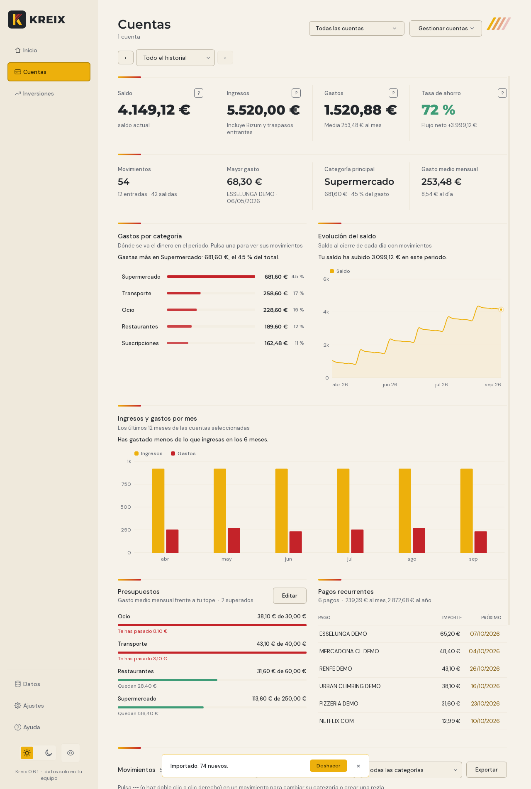
Cuentas: métricas, gráficos, presupuestos, recurrentes y movimientos.
Por mes o en global. El selector de arriba cambia entre Todo el historial y cada mes con datos (las flechas saltan al mes anterior o siguiente). En un mes, el saldo es el saldo al cierre y la media de gasto pasa de mensual a diaria.
Varias cuentas. El selector tiene una casilla por cuenta: marca las que quieras combinar y todo se recalcula con ellas. Gestionar cuentas permite añadir, renombrar y eliminar.
Inversiones
Todo lo de tu cartera: valor, aportado, plusvalía, rentabilidad (TWR y TIR), distribución por fondo, aportado frente a valor, evolución de cada fondo, posiciones actuales y operaciones.
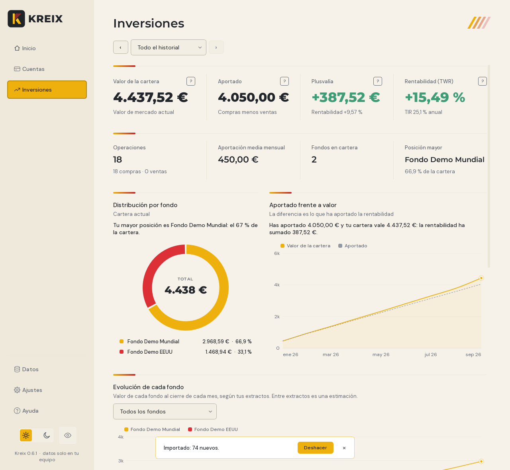
Inversiones: valor, rentabilidad, reparto por fondo y operaciones.
La tarjeta Evolución de cada fondo dibuja una línea por fondo con su valor al cierre de cada mes (o, si eliges uno, su valor frente a lo aportado). Es una estimación: Kreix reconstruye las participaciones que tenías con tus operaciones y las multiplica por un precio interpolado entre los valores liquidativos que conoce. Cuantos más extractos de cartera importes, más fiel es la curva. Con un mes elegido ves el valor estimado al cierre, lo aportado en el mes, la variación sin contar aportaciones y la rentabilidad del mes.
Datos: Importar y Exportar
Importar se explica en el capítulo 3. Exportar guarda todos tus datos en un único archivo .kreix para hacer una copia o llevarlos a otro equipo, y desde ahí se pasan al móvil (capítulo 8).
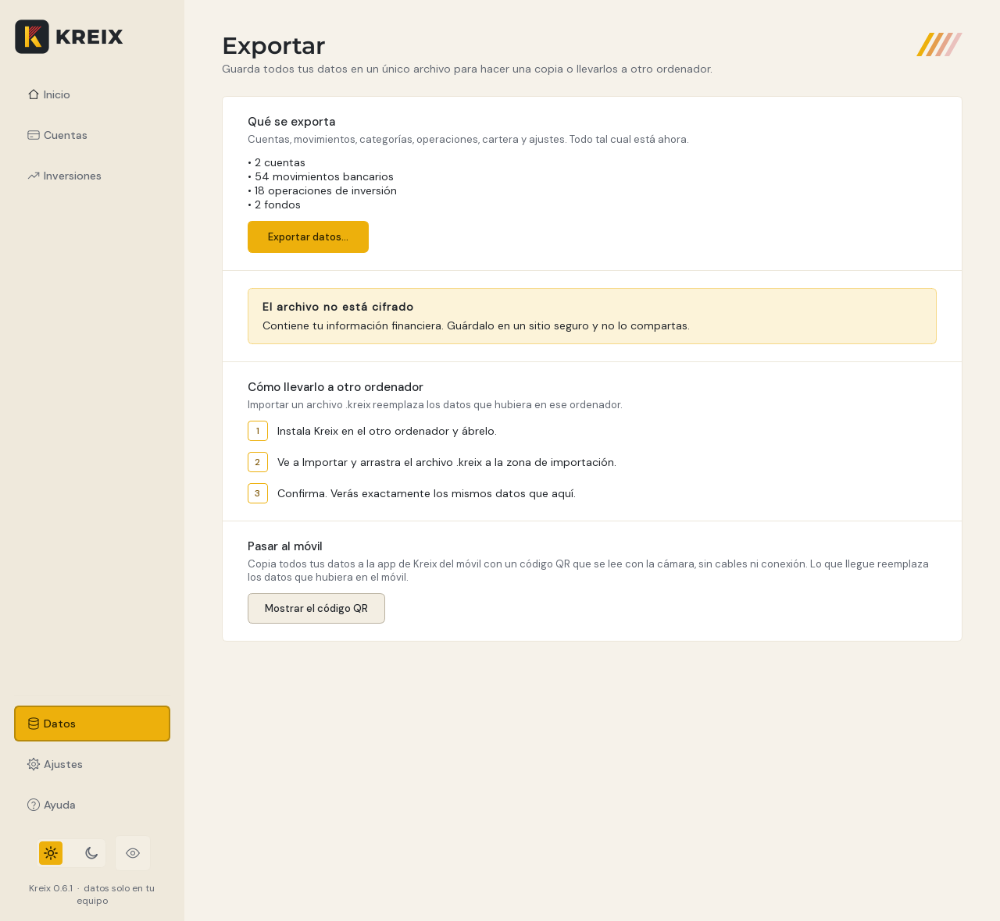
Exportar: el archivo .kreix y «Pasar al móvil».
Ajustes
Organizados en tarjetas por tema. Cada interruptor se aplica al momento:
Tu nombre, Idioma y Lo que te interesa. El idioma cambia toda la aplicación (menús, ayuda, avisos, fechas y números) sin perder tu sitio. En inglés los números se escriben 1,234.56; en castellano y catalán, 1.234,56. Si desactivas cuentas o inversiones, sus pestañas siguen ahí y puedes reactivarlas desde la propia pestaña.
Tamaño del texto (normal, grande o muy grande) para toda la aplicación.
Cielo animado y luz según la hora.
Contar Bizum como ingresos y gastos y Contar traspasos entrantes como ingresos: afectan al cálculo de la tasa de ahorro (capítulo 6).
Reglas de categorías. Tus reglas mandan sobre las que trae Kreix (capítulo 5).
Seguridad (cambiar la contraseña, bloqueo automático, bloquear ahora) y Copias de seguridad (carpeta, cuántas conservar, restaurar): capítulo 7.
Tus datos: dónde se guardan y Borrar todos los datos (deja la base vacía y conserva los ajustes). Acerca de: la versión y las novedades.
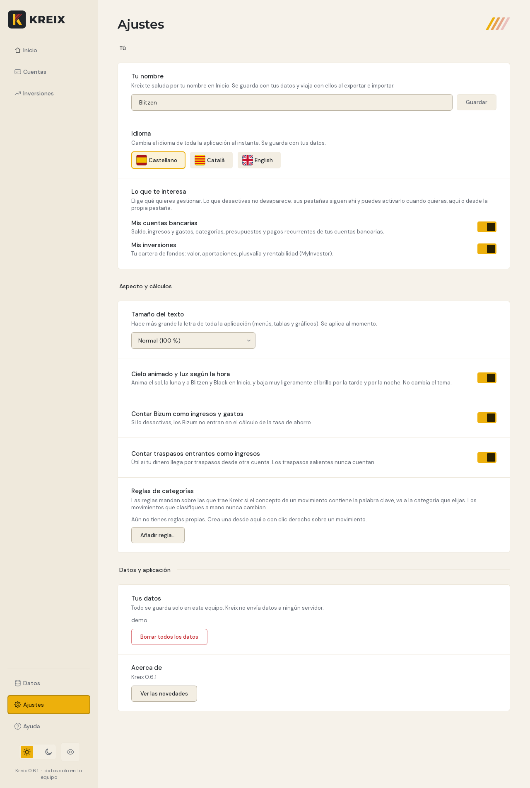
Ajustes: tu nombre, idioma, lo que te interesa, aspecto, reglas y tus datos.
Ayuda
Un glosario para quien no sabe de finanzas, en seis temas: Tu dinero de un vistazo, Tus cuentas bancarias, Tus inversiones, Rentabilidad, Avisos y Usar Kreix. Cada término se despliega al pulsarlo, con cómo lo calcula Kreix, un ejemplo, un aviso (Ojo) y un consejo (Qué hacer). Junto a las cifras principales hay un «?» que abre su explicación ya desplegada. El buscador Ctrl+K también encuentra páginas, acciones, movimientos y términos de la ayuda.
5
Tus movimientos, presupuestos y metas
La tabla de movimientos
En Cuentas, los movimientos van del más reciente al más antiguo y, dentro de un mismo día, en su orden real (se reconstruye con la cadena de saldos). Puedes buscar por concepto, filtrar por categoría y ordenar pulsando cualquier cabecera. Con varias cuentas aparece una columna Cuenta. Pulsar una categoría en el gráfico de gastos, o un presupuesto, filtra la tabla con esos movimientos.
Cada movimiento tiene un botón ••• (también doble clic o clic derecho) para cambiar su categoría, crear una regla o copiar el concepto. El botón Exportar de la tabla guarda en CSV (UTF-8, separado por punto y coma, coma decimal) o Excel las filas que se ven, con el filtro y el orden actuales. No exporta a PDF.
Categorías a tu gusto
Kreix categoriza tus gastos con reglas por palabras clave (sueldo, supermercado, suscripciones, ocio, restaurantes, transporte, vivienda, salud, Bizum…), con un diccionario amplio de comercios y recibos habituales. Tú mandas:
Cambiar categoría de un movimiento: tu elección no la pisa ninguna regla. Volver a la categoría automática la devuelve a Kreix.
Crear regla para «…» lleva a una categoría todos los conceptos con esa palabra, también los que importes después. Se gestionan en Ajustes > Reglas de categorías.
Por clasificar. Inicio cuenta los movimientos sin categoría y, si un comercio se repite, propone una regla para clasificarlos de un clic.
Presupuestos
En Cuentas, el panel Presupuestos (botón Definir presupuestos) fija un tope mensual por categoría. La barra se pone verde mientras te sobra, amarilla al pasar del 85 % y roja al superarlo. Con un mes elegido compara el gasto de ese mes; con todo el historial, el gasto medio mensual. Inicio avisa de los que estás a punto de superar o ya has superado.
Pagos recurrentes
Kreix detecta tus suscripciones y recibos mensuales, te dice cuánto suman al mes y al año y cuándo toca el siguiente. Un cargo cuenta como recurrente si se repite al menos tres meses seguidos, cada unos 30 días y con un importe estable (hasta un 20 % de diferencia). Si deja de aparecer durante mes y medio se da por cancelado. El supermercado no entra (varía de importe y se repite más de una vez al mes) y los traspasos, Bizum e ingresos nunca cuentan.
Tú decides. Con ••• (o clic derecho) sobre un gasto, Marcar «…» como pago recurrente lo añade aunque Kreix no lo detecte (con un solo cargo vale; uno anual cuenta un doceavo al mes). «…» no es un pago recurrente lo quita si Kreix se equivocó. Los marcados por ti llevan «marcado por ti» y se pueden desmarcar.
Metas de ahorro
En Inicio, el panel Metas de ahorro muestra una barra por meta. Gestionar metas permite crear, editar y eliminar metas (por ejemplo, «1.000 € para vacaciones») y apuntar ahorro. Kreix no mueve dinero: solo lleva la cuenta. Si le pones fecha, te dice cuánto habría que apartar al mes para llegar a tiempo.
Traspasos entre tus cuentas
Una salida y una entrada del mismo importe en dos cuentas tuyas se emparejan y no cuentan como gasto ni como ingreso. Los traspasos que entran cuentan como ingreso y los que salen son neutros, salvo que lo cambies en Ajustes.
Avisos de lo que no cuadra
En vez de importar en silencio, Kreix avisa de saldos con huecos, de una cartera que no coincide con las operaciones o de importes incoherentes.
6
Entender las cifras
Cifra
Qué es y cómo se calcula
Patrimonio neto
Saldo de tus cuentas más el valor de mercado de la última foto de cartera de cada fondo. Inicio muestra cuánto es liquidez y cuánto inversión, y qué porcentaje es cada parte.
Rendimiento global
(valor de mercado − capital invertido) ÷ capital invertido, según el extracto de cartera.
Tasa de ahorro
(ingresos − gastos) ÷ ingresos del mes. Puede ser negativa.
TIR
Tasa interna de retorno anualizada con fechas irregulares (XIRR, base 365 días). Tiene en cuenta cuándo aportaste cada euro.
TWR
Rentabilidad ponderada en el tiempo: encadena los tramos entre aportaciones, así que el momento en que aportas no la afecta.
Qué cuenta como ingreso o gasto
Los traspasos entre cuentas propias que entran cuentan como ingreso; los que salen son neutros. Es una opción en Ajustes.
Los Bizum cuentan como ingreso o gasto. También es una opción en Ajustes.
Las aportaciones a MyInvestor no son gasto: se calculan desde las compras de MyInvestor, para no contarlas dos veces.
Cuánto fiarte de la TIR y el TWR
Se reconstruyen desde el historial de operaciones. Si falta alguna operación, la cartera no cuadra con ellas: Kreix te lo avisa y oculta la TIR y el TWR hasta que se corrija, en lugar de enseñar cifras engañosas. Para evitarlo, exporta de tu banco el historial completo desde el inicio.
Las estimaciones se llaman estimaciones. La previsión a fin de mes y el valor de los fondos al cierre de cada mes son cálculos aproximados. La Ayuda explica cómo se hace cada uno.
El modo privacidad
El ojo de la barra lateral (o Ctrl+H) difumina todas las cantidades en euros, también en gráficos y tablas: se ve que hay una cifra, nunca cuál. La cifra real ni llega a pantalla, así que es seguro para compartir pantalla o trabajar en público.
Cómo leer cada gráfico
Bajo cada gráfico hay una frase que dice lo que cuenta («Tu saldo ha subido 3.099,12 € en este periodo»). Léela primero: resume lo que el gráfico quiere decir.
7
Seguridad y copias
Tus datos nunca se guardan en claro. Con la contraseña maestra, los datos se cifran en tu equipo y solo se descifran en memoria mientras Kreix está abierto. Lo que hay en disco es un único archivo cifrado, kreix.krx, en %APPDATA%\Kreix.
Qué hace Kreix por ti
Cifrado: la clave se deriva de tu contraseña con PBKDF2-HMAC-SHA256 (600 000 vueltas y una sal aleatoria) y los datos se cifran con Fernet (AES con autenticación). Una contraseña incorrecta o un archivo alterado se rechazan.
En memoria: al desbloquear, la base se descifra directamente a la RAM, sin archivos temporales en claro. Kreix guarda el archivo cifrado unos segundos después de cada cambio y al cerrar, con escritura atómica y una copia .bak también cifrada.
Sin red: no hay cuentas, servidores ni telemetría.
Cambiar la contraseña
Ajustes > Seguridad la cambia comprobando la actual. Los datos se vuelven a cifrar con una clave y una sal nuevas, y las copias de seguridad también se recifran con la nueva para que ninguna siga abriéndose con la vieja.
Bloqueo automático
Kreix esconde todo y vuelve a pedir la contraseña:
tras unos minutos sin tocar el equipo (1, 2, 5, 10, 15 o 30; o nunca),
al minimizar la ventana,
cuando Windows se bloquea (Win+L) o el equipo se suspende (cada uno se puede apagar).
Ctrl+L o Ajustes > Seguridad > Bloquear ahora lo bloquea al momento. A partir del tercer fallo seguido hay que esperar 5, 10, 20 y, como máximo, 30 segundos antes de probar de nuevo.
Copias de seguridad automáticas
Kreix hace una copia cifrada (Kreix-copia-AAAA-MM-DD_HH-MM.kreix) al abrir si aún no hay ninguna, después de guardar cambios (como máximo una por hora y nunca si no hay nada nuevo) y al cerrar.
Se guardan en la carpeta que elijas en Ajustes > Copias de seguridad (por defecto, junto a los datos) y se conservan las últimas 3, 5, 10 o 20.
Abajo a la izquierda ves cuándo se hizo la última. Comprobar la última copia la abre de verdad y dice cuántos movimientos y cuentas tiene.
Se restauran desde la misma pantalla escribiendo la contraseña maestra.
Copia fuera del equipo. Las copias se guardan por defecto junto a tus datos. Para estar a salvo de un fallo del disco, elige una carpeta en otra unidad o en una nube que ya uses: el archivo está cifrado.
Si olvidas la contraseña
No hay forma de recuperar los datos. En la pantalla de bloqueo, He olvidado la contraseña borra el archivo cifrado (tras pedir confirmación) para empezar de cero con una contraseña nueva e importar de nuevo tus extractos. Por eso las copias y la contraseña apuntada en un sitio seguro son tan importantes.
Lo que no está cifrado
Un archivo .kreix exportado sin marcar la casilla de cifrado, y el archivo que importas mientras Kreix lo valida. Trátalos como datos sensibles: contienen tu información financiera.
8
Llevar tus datos de un sitio a otro
El archivo .kreix
Datos > Exportar crea un archivo .kreix (un ZIP con una copia consistente de la base de datos y una ficha con la versión y los totales). Sirve para hacer una copia o para llevar tus datos a otro ordenador.
La casilla Cifrar el archivo con mi contraseña maestra está activa por defecto. Al importarlo, en este u otro ordenador, Kreix pide la contraseña con la que se exportó.
Si no lo cifras, el archivo no está cifrado. Guárdalo en un sitio seguro y no lo compartas.
Se exporta todo: cuentas, movimientos, categorías, operaciones, cartera y ajustes (también tu nombre y tu idioma), incluida la protección anti-duplicados.
Pasar los datos a otro ordenador
En el ordenador de origen, Datos > Exportar y guarda el archivo .kreix.
En el otro ordenador, instala Kreix, ve a Importar y arrastra el archivo.
Los datos quedan idénticos a los de origen.
Importar un .kreix reemplaza los datos que hubiera en ese equipo (pide confirmación si ya había). Un archivo recibido se trata como no fiable: solo se aceptan sus dos entradas, se comprueba la integridad de la base de datos y se rechaza si trae disparadores o vistas, si es de una versión más reciente o si es demasiado grande.
Pasar los datos al móvil con un código QR
Es la forma de llevar tus datos del ordenador a la app del móvil sin cables ni conexión. Primero instala la app en el móvil (capítulo 9). Después:
En el ordenador, abre Datos > Exportar > Pasar al móvil. Aparece un código QR que va cambiando (unos seis códigos por segundo).
En el móvil, abre la app, ve a Datos y pulsa Escanear el código QR.
Apunta la cámara a la pantalla del ordenador, sin moverla, hasta que la barra de progreso llegue al 100 %. No hace falta que empiece en ningún sitio: la app va juntando los trozos.
Qué se transfiere. Todos los datos, con el mismo formato que el archivo .kreix. Lo que recibas reemplazará los datos que haya en el móvil. La primera vez, el móvil te pedirá permiso para usar la cámara.
9
Kreix en el móvil
La app del móvil es una aplicación web (PWA) que ejecuta la misma lógica que el programa de Windows, con la interfaz adaptada al móvil. Se instala desde el navegador, funciona sin conexión y guarda todo cifrado en el móvil con el mismo formato que el ordenador. Dice exactamente lo mismo que el programa: mismas cifras, mismos gráficos, mismas explicaciones.
Instalarla en Android
Abre Kreix en Chrome desde el propio móvil (dasuarezang.github.io/kreix-web/app/). La primera vez descarga unos 20 MB; después funciona sin conexión.
Abre el menú: los tres puntos (⋮), arriba a la derecha.
Toca «Instalar aplicación». Si no la ves, toca «Añadir a pantalla de inicio» y luego «Instalar»: hacen lo mismo.
Confirma con «Instalar». Sin tienda de apps y sin cuenta.
Ábrela desde la pantalla de inicio. Se abre a pantalla completa, como cualquier otra app.
En Samsung Internet los pasos son: menú de las tres rayas (≡), abajo a la derecha → «Añadir página a» → «Pantalla de inicio» → «Añadir». En Edge son casi iguales a los de Chrome.
Instalarla en iPhone y iPad
Abre Kreix en Safari. Si el enlace se abre dentro de otra app (WhatsApp, Instagram…), cópialo y pégalo en Safari.
Toca Compartir: el cuadrado con una flecha hacia arriba (abajo en el iPhone, arriba a la derecha en el iPad).
Baja y toca «Añadir a pantalla de inicio». La lista es larga: deslízala hasta ver la opción con un cuadrado y un «+».
Deja «Kreix» como nombre y toca «Añadir», arriba a la derecha.
Ábrela desde el icono, no desde Safari: así se ve a pantalla completa.
El primer arranque en el móvil
Funciona igual que en el ordenador: creas una contraseña maestra (con el mismo medidor), eliges idioma, nombre y lo que quieres gestionar, y puedes probar con datos de ejemplo.
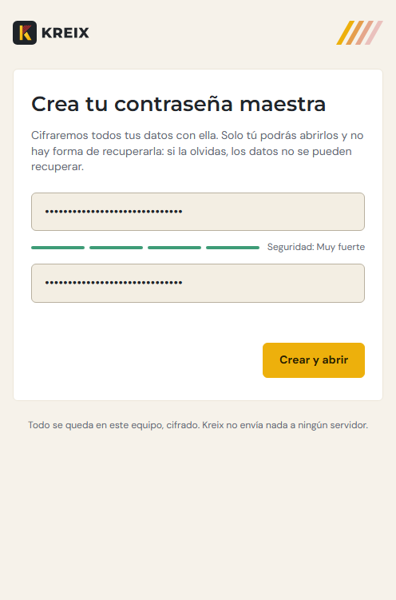
Contraseña maestra
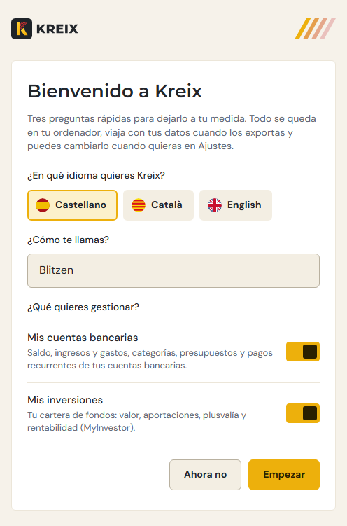
Bienvenida
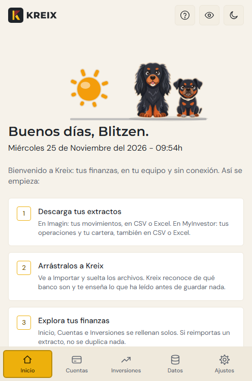
Primera pantalla
Las pantallas
Abajo hay una barra con cinco pestañas: Inicio, Cuentas, Inversiones, Datos y Ajustes. Arriba, tres botones: la Ayuda («?»), el modo privacidad (el ojo) y el cambio de tema claro u oscuro.
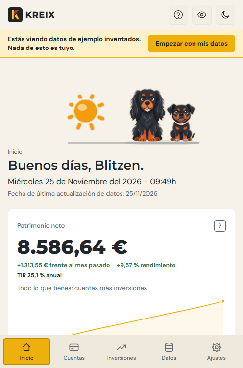
Inicio
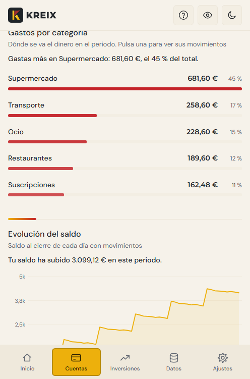
Cuentas
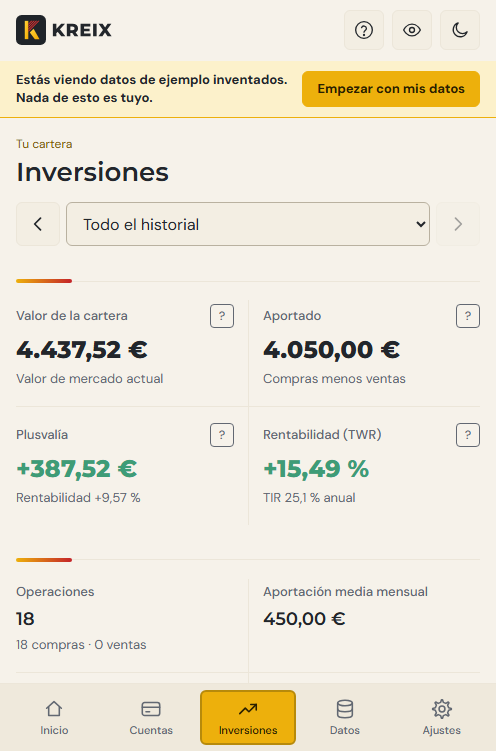
Inversiones
Inicio, Cuentas e Inversiones muestran lo mismo que el programa de Windows, con las tarjetas apiladas. Los movimientos tienen su menú para cambiar categoría o crear reglas, y puedes definir presupuestos y metas.
Ayuda: el mismo glosario que en el ordenador.
Datos: importar, recibir y exportar
En la pestaña Datos puedes Elegir archivos (extractos CSV o Excel, o un archivo .kreix) de las carpetas Descargas o Archivos del móvil, con la misma vista previa «Revisa antes de importar» que en el ordenador. Debajo, Escanear el código QR recibe los datos del ordenador y Exportar datos… guarda un archivo .kreix (cifrado si dejas marcada la casilla).
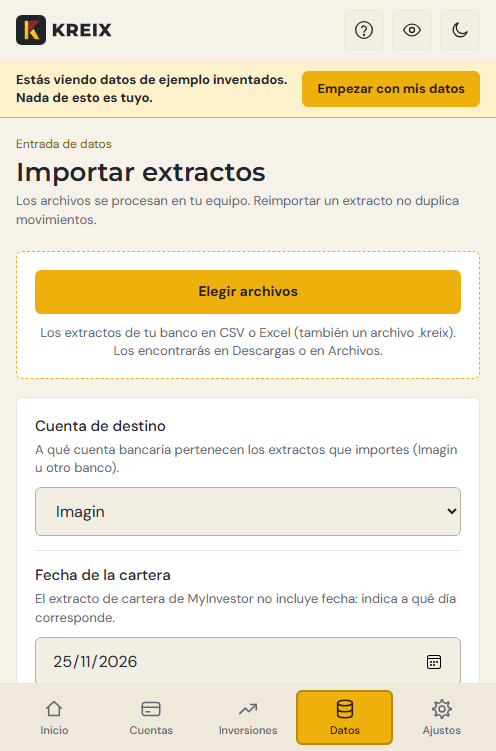
Importar extractos
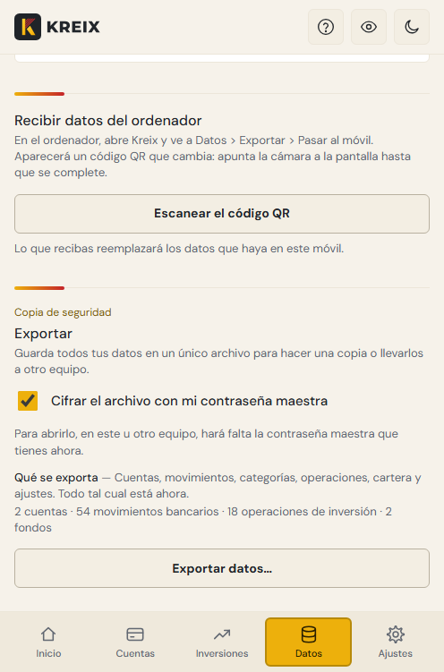
Recibir del ordenador y exportar
Ajustes y seguridad en el móvil
Aquí están el idioma, el nombre, lo que te interesa, el tamaño del texto, el cielo animado y las opciones de Bizum y traspasos, igual que en el ordenador, y las reglas de categorías.
Seguridad:Cambiar contraseña maestra… y Bloquear ahora.
Bloqueo automático: si no usas Kreix durante unos minutos, esconde tus datos y vuelve a pedir la contraseña. Tú eliges cuánto tiempo.
Bloquear al salir de la app: al cambiar de app o apagar la pantalla, Kreix vuelve a pedir la contraseña antes de mostrar tus datos.
Copias de seguridad: en el móvil se hacen a mano desde Datos > Exportar: guarda el archivo .kreix en tu nube o envíatelo. Kreix guarda además la versión anterior de tus datos, cifrada, por si algo falla al guardar.
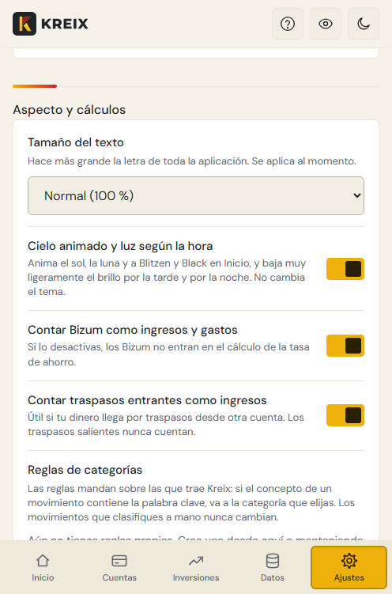
Aspecto y cálculos
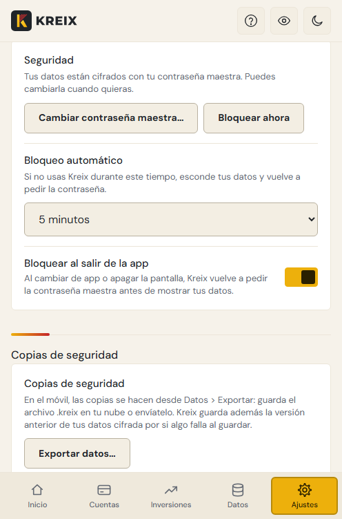
Seguridad y copias
Diferencias con el programa de Windows
Programa de Windows
App del móvil
Pensado para importar y organizar con calma, con atajos de teclado.
Pensada para consultar y para importar extractos descargados en el propio móvil.
Guarda los datos en %APPDATA%\Kreix y hace copias de seguridad automáticas.
Guarda los datos cifrados dentro del navegador del móvil. Las copias se hacen a mano, exportando un .kreix de vez en cuando.
Genera el código QR para pasar los datos.
Lee el código QR con la cámara.
Se instala con un instalador de Windows.
Se instala desde el navegador, sin tienda de apps.
Cuidado al borrar datos del navegador. Los datos de la app viven en el almacenamiento del navegador. Si borras los datos del sitio o desinstalas el navegador, se pierden. Guarda de vez en cuando un archivo .kreix exportado, o vuelve a pasar los datos desde el ordenador.
En un Mac o en Linux puedes usar esa misma app desde el navegador, ya que el programa con instalador es solo para Windows.
10
Atajos y pequeños trucos
Atajos de teclado (programa de Windows)
Ctrl + H
Oculta o muestra las cantidades (modo privacidad).
Ctrl + 1 … 7
Cambian de página, en este orden: Inicio, Cuentas, Inversiones, Importar, Exportar, Ajustes, Ayuda.
Ctrl + K
Busca en todo: páginas, acciones, movimientos y explicaciones de la ayuda.
Ctrl + T
Alterna el modo claro y oscuro.
Ctrl + F
Va al buscador de movimientos.
Ctrl + L
Bloquea Kreix al momento.
F5
Recalcula la página.
←→
Pasan los presupuestos del mes en Inicio.
Pequeños trucos
Cada «?» tiene su explicación. Pulsa el «?» junto a una cifra para ver su definición y cómo la calcula Kreix.
Deshacer es solo el último cambio. Si quieres revertir algo, hazlo justo después, mientras el aviso sigue a la vista.
Reimporta sin miedo. Para añadir un mes nuevo, descarga el extracto completo y suéltalo: solo se añade lo nuevo.
Tamaño del texto. Si lees con dificultad, Ajustes > Tamaño del texto lo hace más grande en toda la aplicación.
Modo oscuro o claro. El conmutador del sol y la luna está debajo del menú lateral (en el móvil, arriba a la derecha).
Probar sin riesgo. «Probar con datos de ejemplo» te deja explorar sin importar nada, y desaparece solo al importar tus datos.
Hasta decenas de miles de filas. Los movimientos se ordenan, filtran y cargan en una fracción de segundo, y la ventana recuerda su tamaño y la última página.
11
Problemas habituales
Windows me avisa al abrir el instalador.
Es porque el instalador aún no está firmado. Pulsa Más información y luego Ejecutar de todas formas.
Kreix no reconoce mi extracto.
Pulsa Asignar las columnas y dile qué columna es la fecha, el concepto y el importe. Si el archivo es un PDF, descárgalo en CSV o Excel: Kreix no importa PDF.
El archivo no se puede leer.
Descárgalo otra vez, en CSV o Excel y sin abrirlo ni editarlo antes en otra aplicación. Kreix explica el motivo en la propia tarjeta.
Los importes salen con el signo cambiado.
En el asistente de columnas, indica que los gastos vienen como números positivos (o corrige el signo del importe) y comprueba la vista previa antes de guardar.
Me equivoqué al importar.
Pulsa Deshacer en el aviso que aparece justo después. Si ya pasó el aviso, Ajustes > Borrar todos los datos deja la base vacía (los ajustes se conservan) para empezar de nuevo.
La TIR y el TWR no aparecen.
Kreix los oculta cuando la cartera no cuadra con las operaciones (falta alguna). Importa el historial completo de operaciones desde el inicio.
Un movimiento está en la categoría equivocada.
Con ••• (o clic derecho) elige Cambiar categoría, o crea una regla para que pase siempre.
He olvidado la contraseña.
No se puede recuperar. En la pantalla de bloqueo, He olvidado la contraseña borra el archivo cifrado para empezar de cero con una nueva.
El código QR no se completa en el móvil.
Acerca el móvil sin moverlo, sube el brillo de la pantalla del ordenador, evita reflejos y comprueba que el navegador tiene permiso de cámara en los ajustes del móvil.
La app del móvil no se instala o no aparece la opción.
Usa Chrome (Android) o Safari (iPhone). En iPhone, si el enlace se abrió desde otra app, cópialo y ábrelo directamente en Safari.
Los datos del móvil desaparecieron.
Se guardan en el navegador: si se borran los datos del sitio, se pierden. Vuelve a pasarlos desde el ordenador con el código QR o importa tu último .kreix.
12
Glosario
Patrimonio neto
Todo lo que tienes: el saldo de tus cuentas más el valor de tu cartera de inversión.
Liquidez
El dinero disponible en tus cuentas, el que puedes usar al momento.
Tasa de ahorro
Qué parte de lo que ingresas en el mes no te lo gastas: (ingresos − gastos) ÷ ingresos.
Valor liquidativo
El precio de una participación de un fondo en un día concreto.
Participación
Cada «trozo» de un fondo de inversión. Tu inversión vale participaciones × valor liquidativo.
Plusvalía
La ganancia (o pérdida) de una inversión: lo que vale ahora menos lo que pusiste.
Rendimiento
La plusvalía en porcentaje sobre lo invertido.
TWR
Rentabilidad que no depende de cuándo aportas: encadena los tramos entre aportaciones.
TIR
Rentabilidad anualizada que sí tiene en cuenta cuándo aportaste cada cantidad.
ISIN
El código internacional de 12 caracteres que identifica un fondo.
Pago recurrente
Un cargo que se repite cada mes con un importe parecido: suscripciones, recibos.
Traspaso
Mover dinero entre dos cuentas tuyas. No es un gasto ni un ingreso.
Regla de categoría
«Si el concepto contiene esta palabra, va a esta categoría». Las tuyas mandan sobre las de Kreix.
Contraseña maestra
La contraseña con la que se cifran tus datos. No se puede recuperar.
Archivo .kreix
Un único archivo con todos tus datos, para copias y para llevarlos a otro equipo.
PWA
La app del móvil: una aplicación web que se instala desde el navegador y funciona sin conexión.
¿Algo que no queda claro?
La Ayuda de Kreix explica cada cifra con ejemplos, y la web tiene la guía en línea y las preguntas frecuentes: dasuarezang.github.io/kreix-web